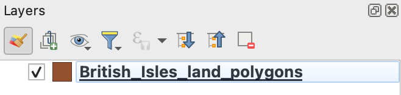
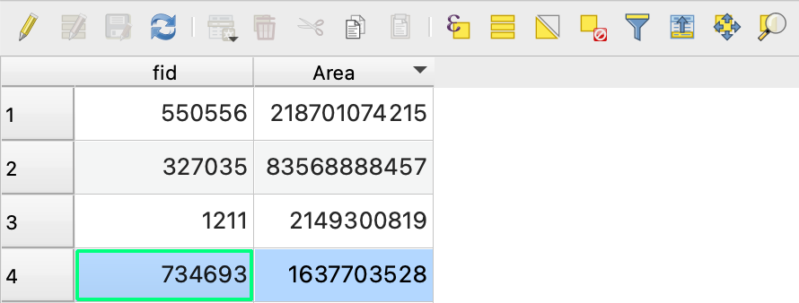

1 Dechrau arni
I feistroli QGIS, rhaid dechrau gyda’r pethau sylfaenol. Mae’r ymarfer hwn yn cyflwyno’r sgiliau sylfaenol a fydd yn sail i ddatblygu eich prosiect fferm wynt a thu hwnt - gan gynnwys eich traethawd hir. Cymerwch eich amser, gofynnwch gwestiynau, a gwnewch yn siŵr eich bod yn hyderus gyda phob cam cyn symud ymlaen.
I ddod yn gyfarwydd â’r amgylchedd Quantum GIS (QGIS) ar gyfer delweddu a phrosesu data geo-ofodol. Byddwch yn dysgu sut i agor gwahanol fathau o haen ddata, addasu’r ffordd maen nhw’n edrych, archwilio eu priodoleddau, a dewis nodweddion i’w dadansoddi ymhellach.
1.1 Dechrau
Dilynwch y camau yma i gael mynediad at yr holl setiau data sydd eu hangen arnoch ar gyfer y sesiynau ymarferol a’r prosiect terfynol
Lansiwch
QGIS. Gallai hyn fod ar gyfrifiadur Prifysgol, drwy’r remote desktop, neu ar eich cyfrifiadur eich hunO’r bar dewislen, cliciwch
Project→New. Dewch o hyd i’r eicon llwybr byr i greu prosiect newydd-
Ychwanegwch eich haen fector gyntaf yn QGIS:
- O’r bar dewislen, cliciwch
Layer→Add Layer→Add Vector Layer... - Cliciwch yr eicon
Browse() - Llywiwch i’r ffolder lle mae’r data wedi’i storio, h.y.
GEG276 - Agorwch y ffolder
British_Isles_land_polygonsa chliciwch yr haen fector.gpkggyfatebol - Cliciwch
Open→Add→Close. Mae’r set ddata hon o’r prosiect OpenStreetMap yn cynnwys polygonau sy’n cynrychioli’r nifer o ynysoedd sy’n ffurfio Ynysoedd Prydain. Sylwch fod yr haen bellach wedi’i rhestru o dan y panelLayers. Gallwch hefyd lusgo a gollwng setiau data o’r porwr yn syth i’r Map Canvas.
- O’r bar dewislen, cliciwch

1.2 Llywio
- Defnyddiwch y
Map Navigation Toolbari archwilio’r set ddata hon drwy symud a chwyddo

Rhowch gynnig ar ddefnyddio olwyn sgrolio’r llygoden fel llwybr byr
Ymgyfarwyddwch â llywio o gwmpas y Map Canvas drwy golli’ch hun! Paniwch a chwyddwch tan na allwch weld yr haen Ynysoedd Prydain mwyach. Ar ôl colli’ch hun, de-gliciwch yr haen yn y panel
Layersa chliciwchZoom to Layer(s)i ddychwelyd yn hawdd yn ôl i’r haen honno.
1.3 Addasu priodweddau arddull
-
I addasu symbolaeth haen:
- O’r panel
Layers, de-cliciwchBritish_Isles_land_polygonsa chliciwchProperties...→Symbology. Llwybr byr defnyddiol iPropertiesyw dwbl-glicio’r haen. - Cliciwch
Simple Fillac arbrofwch gyda newid lliwiau, arddulliau, a lledau symbolaeth yr haen. Mae gennych reolaeth lwyr dros sut mae haenau fector yn ymddangos. Wrth ddylunio map, ystyriwch yn ofalus sut i ddewis arddull briodol ar gyfer pob haen. - Cliciwch
Apply→OKpan fyddwch wedi gorffen golygu symboleg yr haen
- O’r panel
O’r bar dewislen, cliciwch
Project→Savea chadwch eich prosiect mewn lleoliad addas. Dewch o hyd i’r llwybr byr. Cofiwch gadw’n rheolaidd o hyn ymlaen!
1.4 Mesur gwrthrychau geo-ofodol
- Cliciwch y saeth ostwng wrth ymyl yr eicon
Measurei ddewis yr offeryn priodol ar gyfer mesur:
- Y pellter rhwng pwyntiau cardinal eithaf Prydain Fawr (mewn milltiroedd)
- Arwynebedd bras Ynys Manaw (mewn cilometrau sgwâr)

- Defnyddiwch chwith-glic i ychwanegu pwyntiau, a dde-glic i offen gymryd y mesuriadau hyd / arwynebedd
Beth yw’r pellter rhwng pwyntiau cardinal eithaf Prydain Fawr (mewn milltiroedd)?
Beth yw arwynebedd bras Ynys Manaw (mewn cilometrau sgwâr)?
- Y pellter rhwng pwyntiau cardinal eithaf Prydain Fawr oedd 603 milltir.
- Arwynebedd bras Ynys Manaw oedd 571 cilomedr sgwâr.
1.5 Archwilio’r Attribute Table
O’r panel
Layers, de-gliciwchBritish_Isles_land_polygonsa chliciwchOpen Attribute Table. Mae tabl priodoleddau yn rhan sylfaenol o bob set ddata GIS. Mae pob rhes o’r tabl yn cyfateb i un nodwedd (e.e. polygon) o’r haen fector, ac mae pob colofn, neu briodoledd (y gall fod cymaint ohonynt ag sydd eu hangen), yn cofnodi priodwedd o’r nodwedd (e.e. enw, arwynebedd, cylchedd). Mae gan yr haen ddata benodol hon ddau briodoledd:fid(dynodwr maes) acAreaCliciwch yr eicon
Dock Attribute Table( ) fel y gallwch weld y Map Canvas a’r Attribute Table ar y sgrin ar unwaith.
) fel y gallwch weld y Map Canvas a’r Attribute Table ar y sgrin ar unwaith.-
I ddeall sut mae’r tabl priodoleddau’n cyfateb â’r haen fector:
- Trefnwch y tabl priodoleddau yn ôl arwynebedd pob polygon drwy glicio ar deitl y golofn
Area. Bydd cliciau ychwanegol yn trefnu’r gwerthoedd i fod yn esgynnol neu ddisgynnol. - Cliciwch ar rif rhes i ddewis y polygon cyfatebol. Mae’r polygon a ddewiswyd yn y Map Canvas bellach wedi’i amlygu’n felyn.
- Cliciwch yr eicon
Zoom map to the selected rowsyn y gornel dde uchaf ( ) i chwyddo i’r polygon a ddewiswyd yn y Map Canvas
) i chwyddo i’r polygon a ddewiswyd yn y Map Canvas
- Trefnwch y tabl priodoleddau yn ôl arwynebedd pob polygon drwy glicio ar deitl y golofn

- Ailadroddwch y cam uchod i archwilio’r deg ynys fwyaf Ynysoedd Prydain
Allwch chi enwi seithfed ynys fwyaf Ynysoedd Prydain?
Ynys Môn yw seithfed ynys fwyaf Ynysoedd Prydain.
-
Gallwch hefyd ddewis nodweddion yn y Map Canvas i nodi eu priodoleddau cyfatebol yn y tabl priodoleddau:
- Cliciwch yr eicon
Select Features() - Dewiswch (amlygwch mewn melyn) Ynys Wyth
- Yn y tabl priodoleddau, cliciwch yr eicon
Move selection to top() i symud y llinell a ddewiswyd o’r tabl i’r brig - Darllenwch arwynebedd y nodwedd - sydd mewn metrau sgwâr - a’i drosi i gilometrau sgwâr (h.y. rhannwch â 1,000,000)
- Cliciwch yr eicon
Beth yw union arwynebedd Ynys Wyth (mewn cilometrau sgwâr)?
Union arwynebedd Ynys Wyth oedd 382 cilomedr sgwâr.
- Cliciwch yr eicon
Deselect feature( ) i ddad-ddewis y detholiad cyfredol. Bydd y swyddogaethau hyn yn ddefnyddiol iawn yn ddiweddarach.
) i ddad-ddewis y detholiad cyfredol. Bydd y swyddogaethau hyn yn ddefnyddiol iawn yn ddiweddarach.
1.6 Trefnu haenau
Ychwanegwch yr haen
Wales_Principal_Areas.gpkgyn y ffolderUK_Boundariesi’ch prosiect. Mae’r set ddata hon yn cynnwys polygonau sy’n cynrychioli awdurdodau unedol (a elwir hefyd yn siroedd) Cymru. Noder y bydd yr haen hon hefyd yn ymddangos yn y panelLayersAddaswch arddull yr haen hon ac archwiliwch ei thabl priodoleddau
Arbrofwch gyda troi gwelededd yr haen ymlaen ac i ffwrdd gan ddefnyddio’r blychau ticio yn y panel
Layers(). Daw hyn yn hanfodol wrth reoli haenau lluosog mewn prosiectNewidiwch drefn yr haenau drwy lusgo un i fyny neu i lawr yn y panel haenau
Symudwch
Wales_Principle_Areasi frig y panelLayers. Sylwch sut mae ffin wleidyddol (awdurdodau unedol) Cymru yn mynd y tu hwnt i’r arfordir (Polygonau Tir). Mae hyn oherwydd bod y ffin tir ffisegol fel arfer yn cael ei dosbarthu yn ôl y marc dŵr uchel cymedrig, tra bod ffiniau gweinyddol fel arfer yn cael eu dosbarthu yn ôl y marc distyll cymedrig. Dyna Ddaearyddiaeth!-
I gategoreiddio symboleg yr haen:
- Agorwch ffenestr
Symbologyyr haen - Defnyddiwch y cwymplen i newid ffynhonnell y symboleg o
Single SymboliCategorized - Defnyddiwch y ddewislen
Valuei ddewis y priodoleddname - Cliciwch
Classify→OK. Dyna liwgar!
- Agorwch ffenestr
1.7 Labelu haenau
-
I labelu haenau:
- Dewiswch yr haen
Wales_Principal_Areaso’r panelLayers - O’r bar dewislen, cliciwch
Layer→Labeling. Dewch o hyd i’r llwybr byr i’r ffenestr hon (awgrym - edrychwch ynProperties...) - Defnyddiwch y cwymplen i newid y ffynhonnell labelu o
No LabelsiSingle Labels - Newidiwch y cwymplen
Valuei labelu polygonau Awdurdodau Unedol Cymru yn ôl eu henwau Cymraeg neu Saesneg
- Dewiswch yr haen
-
Arbrofwch gyda newid y labeli drwy:
- Newid arddull y testun () e.e. arddull a maint
- Newid fformat y label () e.e. lapio a chyfeiriadedd
- Ychwanegu byffer testun ()
- Newid lleoliad y label ()
- Chwarae o gwmpas gyda dewisiadau eraill. Rydych chi mewn rheolaeth lwyr!
- Ydych chi wedi cadw eich prosiect yn ddiweddar?
Nawr bod y Prif Ardaloedd wedi’u labelu, chwyddwch allan. Sylwch sut mae QGIS yn dewis gosod a newid maint y labeli er mwyn sicrhau i fod nhw’n parhau i fod yn weladwy, ond yn diffodd rhai ohonynt i osgoi testun sy’n gorgyffwrdd. Mae hwn yn rhan sylfaenol o ddylunio mapiau ac mae QGIS yn ceisio optimeiddio darllenadwyedd. Gallwch reoli’r ymddygiad hwn trwy’r ffenestr
Labelingac fe’ch anogir i arbrofi.
1.8 Ychwanegu a hidlo data
Ychwanegwch yr haen fector
Wales_operational_windfarms.gpkgat eich prosiect. Daw’r data hyn o Gronfa Ddata Cynllunio Ynni Adnewyddadwy’r DU ac maent yn cynrychioli lleoliad ffermydd gwynt gweithredol ledled Cymru.Archwiliwch y tabl priodoleddau
Addaswch arddull yr haen, gan nodi bod data pwynt yn cael ei gynrychioli mewn ffordd wahanol i ddata polygon
Labelwch y ffermydd gwynt wrth eu henw neu wrth eu capasiti cynhyrchu
Ychwanegwch yr haen fector
gis_osm_roads_free_1.gpkg, sydd yn y ffolderBritish_Isles_geofabrik→wales, at eich prosiect. Mae’r data hyn yn rhan o brosiect OpenStreetMap ac yn cynrychioli pob ffordd yng Nghymru. Mae hon yn set ddata fawr a gall gymryd amser i’w llwytho a’i harddangos.-
Unwaith eto, ar gyfer yr haen hon:
- Archwiliwch y tabl priodoleddau
- Arbrofwch gyda gwahanol arddulliau ar gyfer y data llinell
-
Mae llawer o ddata yma! Felly gadewch i ni ei is-setio. Mae yna lawer o ffyrdd o wneud is-setiau o haenau data i ddewis dim ond y data sydd ei angen arnoch neu yr hoffech ei arddangos. I hidlo’r data yn gyffredinol:
- De-gliciwch yr haen ffyrdd a chliciwch
Filter... - Mae’r offeryn hwn yn caniatáu ichi weld yn hawdd yr holl werthoedd unigryw sydd ym mhob maes (neu golofn) o’r tabl priodoleddau. Cliciwch
fclass→All. Gallwch nawr weld yr holl ddosbarthiadau unigryw o ffyrdd yn yr haen fector. - O dan
Provider Specific Filter Expression, teipiwch"fclass" IN ('primary', 'trunk', 'motorway'). Gwnewch yn siŵr bod atalnodi a bylchau yn manwl gywir - Cliciwch
OK. Dylai eich map nawr ddangos ffyrdd sydd wedi’u dosbarthu fel rhai cynradd ac eilaidd yn unig. Mae eicon twndis ( ) hefyd wedi ymddangos i’r dde o’r enw’r haen yn y panel `Layers’, i’ch atgoffa bod hidlydd wedi’i gosod.
) hefyd wedi ymddangos i’r dde o’r enw’r haen yn y panel `Layers’, i’ch atgoffa bod hidlydd wedi’i gosod.
- De-gliciwch yr haen ffyrdd a chliciwch
Labelwch y ffyrdd gyda’r priodoledd
ref(h.y. rhif y ffordd). Gweler sut mae’r labeli hyn yn cael eu harddangos wrth i chi chwyddo i mewn ac allan o’r map.-
I gael gwared ar y hidlydd:
- Cliciwch ar eicon y twndis () ger yr haen ffyrdd
- Cliciwch
Clear→OK
- Cliciwch ar eicon y twndis (
-
I hidlo’r data drwy ddiffinio’r hyn a gyflwynir yn y map:
- Agorwch ffenestr
Symbologyyr haen - Defnyddiwch yr opsiwn
Categorizedi gategoreiddio symbolaeth y ffordd yn ôl y priodoleddfclass - Dileu pob dosbarth ffordd ac eithrio
primary,trunk, amotorwaygan ddefnyddio’r eiconDelete(). Gweld os allwch chi wneud y dasg hon yn haws i’ch hun trwy ddefnyddio’r bysellauShiftaCtrl… - Dwbl-giciwch y symbol llinell fesul categori i ddewis symboleg addas ar gyfer y ffyrdd hyn (e.e. coch trwchus ar gyfer y prif ffyrdd, glas golau trwchus iawn ar gyfer y draffordd)
- Agorwch ffenestr
Ychwanegwch yr haen fector
gis_osm_waterways_free_1.gpkgo’r ffolderBritish_Isles_geofabrik→wales. Pa liw fyddai orau ar gyfer yr haen hon?
1.9 Ychwanegu data allanol
Llywiwch i mapdata.llyw.cymru
Chwiliwch am “Llwybr Arfordir Cymru” a chliciwch ar y ddolen
O dan
Dewiswch fformat y data gofodol, dewiswchOGC Geopackagea chliciwchLawrlwythoSymudwch y ffeil a lawrlwythwyd i’ch OneDrive
Ychwanegwch yr haen at eich prosiect a’i harchwilio
Rhowch gynnig ar chwilio am ffeiliau data GIS eraill a’u lawrlwytho o mapdata.llyw.cymru, geofabrik.de, neu unrhyw ffynhonnell arall. Dylai chwilio am setiau data geo-ofodol ddangos i chi pa mor hawdd y gall fod i ddod o hyd i ddata a’i lawrlwytho o’r rhyngrwyd. Bydd hyn hefyd yn rhoi ysbrydoliaeth ar gyfer syniadau traethawd hir, sydd eisoes ar eich gorwel.
1.10 Ydych chi wedi gorffen?
- Llongyfarchiadau! Rydych chi wedi dysgu hanfodion QGIS. Gwnewch yn siŵr eich bod chi wedi deall yr holl gamau uchod. Ailadroddwch os oes angen, a gofynnwch am gymorth neu gyngor gan yr arddangoswyr. Bydd angen y wybodaeth hon arnoch mewn ymarferion yn y dyfodol ac ar gyfer yr asesiadau.
Erbyn diwedd yr ymarfer hwn dylech chi allu:
- Creu a rheoli prosiect QGIS drwy ychwanegu haenau fector o wahanol ffynonellau a defnyddio’r offer llywio i symud, chwyddo, a dychwelyd i hyd a lled haen
- Addasu ymddangosiad data gofodol drwy symboleg, trefnu haenau, a labelu i adeiladu map clir a darllenadwy
- Archwiliwch y tabl priodoleddau i ddeall sut mae nodweddion yn ymwneud â’u priodoleddau, didoli cofnodion a dewis nodweddion yn gydfuddiannol rhwng y tabl a chynfas map
- Mesur a hidlo data daearyddol drwy gael hydoedd ac arwynebeddau, trosi rhwng unedau, ac is-osod haenau gan ddefnyddio mynegiadau hidlo a symboleg wedi’i chategoreiddio
- Gwerthfawrogi sut mae confensiynau cartograffig a gweinyddol yn llunio cynrychiolaeth ofodol, o osod labeli awtomataidd i’r ffordd y caiff ffiniau eu llunio